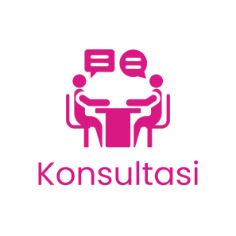
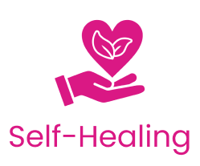
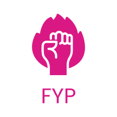

Visi
Menjadi platform pendamping kesehatan mental terdepan yang menciptakan ekosistem digital aman dan suportif bagi setiap individu untuk tumbuh, memahami diri, dan meraih kesejahteraan emosional.


HealinQ adalah platform digital pendamping kesehatan mental yang menyediakan layanan edukasi, konsultasi dengan psikolog, serta berbagai self-care tools interaktif. Website ini membantu pengguna mengenali, memahami, dan mengelola kondisi emosional mereka secara mandiri maupun dengan dukungan profesional, dalam ekosistem yang aman dan mudah diakses.
Menjadi platform pendamping kesehatan mental terdepan yang menciptakan ekosistem digital aman dan suportif bagi setiap individu untuk tumbuh, memahami diri, dan meraih kesejahteraan emosional.

Fitur Konsultasi menyediakan layanan pendampingan bersama psikolog atau konselor profesional secara online. Pengguna dapat memilih jadwal sesi, menyampaikan keluhan secara privat, serta mendapatkan arahan dan strategi penanganan yang sesuai dengan kondisi mereka. Layanan ini dirancang untuk memberikan dukungan emosional yang aman, nyaman, dan rahasia.
See More
Fitur Self-Healing Tools berupa journaling membantu pengguna mengekspresikan pikiran dan perasaan secara tertulis. Tersedia panduan pertanyaan reflektif, pelacakan suasana hati (mood tracker), serta latihan afirmasi positif. Fitur ini bertujuan membantu pengguna memahami emosi, mengurangi stres, dan membangun kesadaran diri secara mandiri.
See More
Fitur FYP (Find Your Passion) membantu pengguna mengenali minat, potensi, dan tujuan hidup melalui tes minat, kuis refleksi diri, serta rekomendasi aktivitas yang sesuai dengan kepribadian mereka. Fitur ini dirancang untuk meningkatkan motivasi, rasa percaya diri, dan arah hidup yang lebih jelas sebagai bagian dari kesehatan mental yang menyeluruh.
See More